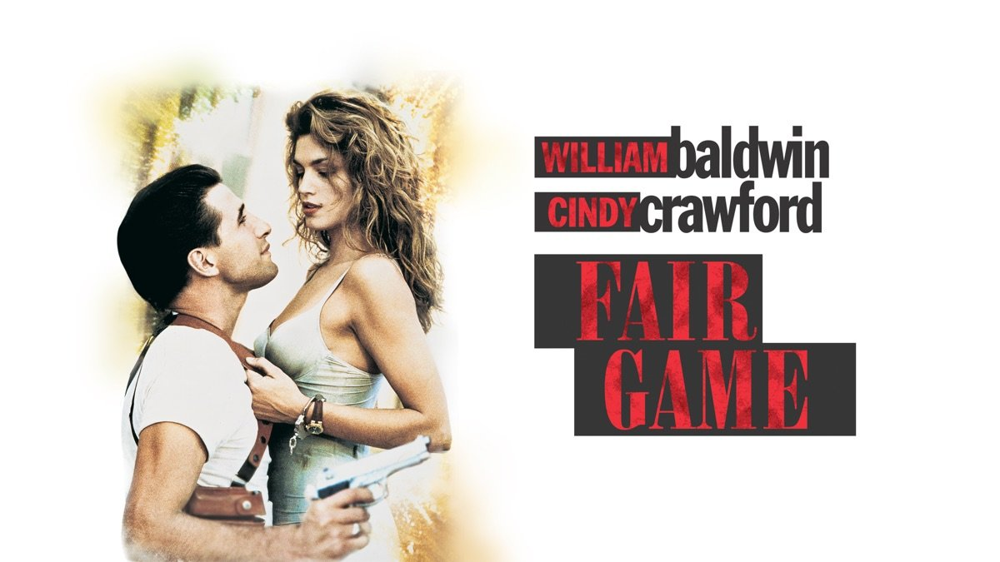
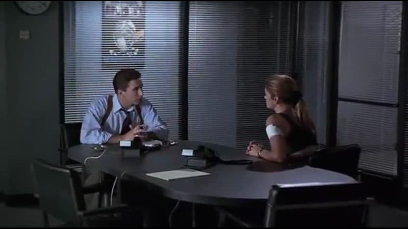
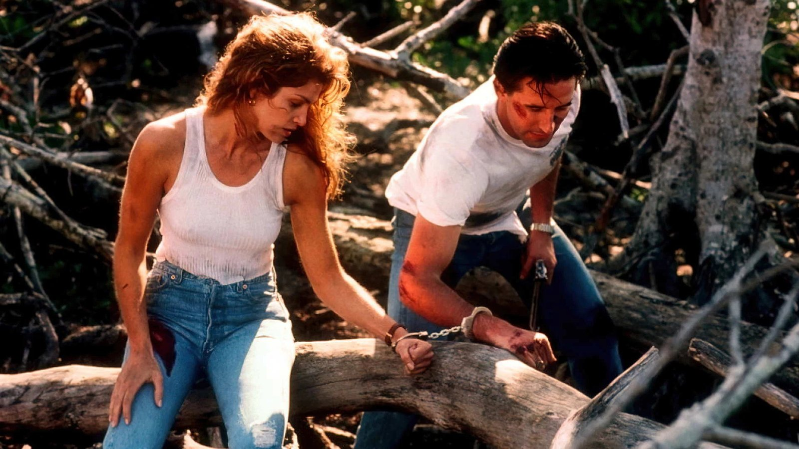

Celui-là, c'est une cassette que mes parents avaient achetée.
Une K7 vidéo qui a fini dans le lecteur du salon, et dont je garde le souvenir d'une très bonne découverte. William Baldwin, Cindy Crawford, de l'action du début à la fin : j'avais adoré.
Je l'ai revu récemment, avec un peu d'appréhension. On sait ce que le temps fait à certains films.
Aucune déception. Pas un temps mort, de l'action à chaque virage, et surtout ce duo Crawford/Baldwin qui fonctionne à merveille. Quant à Cindy Crawford, elle est toujours aussi belle.
Ce soir, on ressort la cassette.

Fair Game — affiche, 1995
Fair Game.
1995. Réalisé par Andrew Sipes. Avec William Baldwin, Cindy Crawford et Steven Berkoff.
Produit par Joel Silver, le producteur derrière L'Arme Fatale et Piège de Cristal, pour Warner Bros. Sorti en salles en novembre 1995, avec un budget d'environ 50 millions de dollars et à peine plus de 11 millions de recettes aux États-Unis.
Un échec commercial retentissant, pour un film qui ne mérite pas ce sort.
Le film adapte le roman de Paula Gosling, A Running Duck, déjà porté à l'écran en 1986 avec Sylvester Stallone dans Cobra. Même point de départ : un flic chargé de protéger une femme que des tueurs veulent éliminer.
Ici, le flic, c'est Max Kirkpatrick, inspecteur de Miami, et la femme, Kate McQuean, une avocate devenue la cible d'un commando dirigé par un ancien colonel du KGB.
Miami, la chaleur, des explosions à chaque coin de rue.
Fair Game n'a qu'une ambition : ne jamais vous laisser reprendre votre souffle.
Joel Silver règne sur le cinéma d'action américain. L'Arme Fatale, Piège de Cristal, Predator : son nom en haut de l'affiche vaut promesse de spectacle. Avec Fair Game, il veut prolonger la formule : un flic, une cible à protéger, des méchants qui ne lâchent rien.
Le scénario de Charlie Fletcher reprend le roman de Paula Gosling, A Running Duck, publié en 1974. Le roman avait déjà servi de base à Cobra en 1986, mais Fair Game le transpose à Miami, avec des tueurs venus de l'ex-KGB, dans un monde d'après-Guerre froide où les anciens services soviétiques cherchent de nouveaux terrains de jeu.
William Baldwin, frère cadet d'Alec, est alors une tête d'affiche montante : Flatliners, Backdraft, Sliver. Il incarne Max Kirkpatrick, un flic sarcastique qui n'a pas demandé cette mission.
En face, le vrai pari du film : Cindy Crawford. Top model numéro un des années 90, visage de l'émission House of Style sur MTV, elle fait ici ses débuts en tête d'affiche au cinéma. Warner et Silver misent sur sa notoriété pour porter le film.
Steven Berkoff, spécialiste des méchants russes depuis Rambo II, incarne le colonel Kazak. Salma Hayek fait une apparition dans un second rôle.
Le tournage se déroule en Floride, avec un budget d'environ 50 millions de dollars, énorme pour un thriller de ce genre.
Le film sort en novembre 1995. Les recettes américaines dépassent à peine 11 millions de dollars. Il vaut aussi à Cindy Crawford trois nominations aux Razzie Awards.
Un échec commercial complet, et une réputation qui colle encore au film trente ans plus tard.

Première rencontre : Max Kirkpatrick (William Baldwin) et Kate McQuean (Cindy Crawford)
Kate McQuean est avocate à Miami.
Son dernier dossier est un banal litige de divorce : elle cherche à faire saisir un bateau appartenant à un homme d'affaires cubain. Une affaire de routine, croit-elle.
Puis quelqu'un tente de la tuer.
L'inspecteur Max Kirkpatrick, flic de Miami au caractère bien trempé, est chargé de la protéger. Une mission dont il se serait volontiers passé, et qui va tourner à la course-poursuite dès les premières heures.
Car derrière ce bateau se cache un commando dirigé par le colonel Kazak, ancien officier du KGB, qui ne recule devant rien pour récupérer ce que le navire transporte. Pour lui, Kate n'est plus une avocate : c'est un obstacle à éliminer.
Kirkpatrick et McQuean n'ont pas le temps de souffler. Chaque refuge se transforme en piège, chaque appel à l'aide en impasse, et leurs poursuivants ont toujours une longueur d'avance.
Deux personnes qui n'ont rien en commun, une ville qui devient un terrain de chasse, et une question qui revient sans cesse : jusqu'où faut-il courir pour rester en vie ?
Fair Game a été jugé sur ce qu'il n'avait jamais voulu être, et c'est probablement là que la critique de 1995 s'est trompée.
Le film n'a aucune prétention à la profondeur. Il tient sur une mécanique simple : un flic, une cible, des tueurs, et une ville qui devient un terrain de chasse. Là où d'autres thrillers de l'époque diluent leur récit dans des sous-intrigues, Andrew Sipes garde le cap. Chaque scène pousse la suivante, chaque refuge se retourne en piège, et le rythme ne retombe jamais. C'est du cinéma d'action à l'état brut, celui de Joel Silver, où l'on n'a pas le temps de regarder sa montre.
Les séquences d'action tiennent leur promesse. Explosions spectaculaires, poursuites, fusillades : tout est lisible, physique, tourné sur le terrain, avec une générosité que les budgets d'aujourd'hui, saturés d'effets numériques, ont largement perdue.
Reste la question du duo, celle qui a valu au film ses Razzie. Avec le recul, le verdict paraît injuste. William Baldwin joue le flic sarcastique avec une décontraction qui rappelle les buddy movies des années 80, sans jamais forcer. Cindy Crawford, elle, n'a pas à composer un personnage complexe : Kate McQuean est une femme qui court, qui a peur, qui refuse de se laisser abattre. Elle le fait avec une sincérité qui fonctionne, et sa présence à l'écran est indéniable.
Entre les deux, une vraie alchimie. Leurs échanges, entre agacement et complicité, donnent au film ce petit supplément d'humanité qui distingue un thriller efficace d'un simple enchaînement de scènes d'action.
Steven Berkoff, enfin, campe un méchant russe cent pour cent années 90 : froid, théâtral, presque caricatural, mais jamais ridicule. Il donne au film l'antagoniste dont il avait besoin.
Fair Game n'invente rien. Il exécute sa formule avec un enthousiasme communicatif, sans jamais s'excuser.
Et c'est précisément ce qui le rend si agréable à revoir.

Menottés l'un à l'autre, en fuite dans la mangrove
Fair Game a été enterré avant même d'avoir eu le temps d'exister.
Le premier coup vient du box-office. Cinquante millions de dollars de budget, un peu plus de onze millions de recettes aux États-Unis : dans l'Hollywood des années 90, un tel écart suffit à condamner un film. Le succès ou l'échec d'un week-end devient un verdict définitif, et personne ne revient en arrière.
Le deuxième coup vient des Razzie Awards. Trois nominations : Pire actrice, Pire couple à l'écran, Pire révélation. Le film est étiqueté « navet » avant que le public n'ait eu son mot à dire, et l'étiquette a survécu bien plus longtemps que les recettes.
Il y a aussi le procès d'intention fait à Cindy Crawford. En 1995, un top model qui passe au cinéma n'a droit à aucune indulgence. La critique juge la personne avant le jeu, et le film paie pour ce soupçon.
Le calendrier n'aide pas non plus. Fair Game sort en novembre 1995, au milieu d'une fin d'année chargée, juste avant l'arrivée de GoldenEye. Face à ces poids lourds, un thriller d'action modeste, sans grande star au sens strict, passe inaperçu.
Reste le contexte du genre : le « méchant ex-KGB » commence à s'user cinq ans après la fin de la Guerre froide, et le public a déjà vu ce type d'antagoniste plusieurs fois.
Le film s'est ensuite installé là où tant d'autres ont trouvé leur public : la vidéo, les rediffusions, les cassettes qu'on achète ou qu'on emprunte sans se soucier de la réputation.
Un thriller efficace, victime d'une mauvaise saison et d'une mauvaise étiquette.
Parce que le film tient encore, et c'est plus rare qu'on ne le croit.
Je l'ai revu récemment, avec la crainte de voir un souvenir d'enfance se déliter. Rien de tel : Fair Game n'a pas pris une ride. Pas un temps mort, de l'action à chaque séquence, un rythme qui ne faiblit jamais. C'est le genre de film qu'on lance sans arrière-pensée et dont on ressort avec le sourire.
Parce que le duo Crawford/Baldwin fonctionne, et que le verdict des Razzie n'a jamais rendu justice à ce qu'on voit à l'écran. Leur complicité, leurs accrochages, leur façon de se renvoyer la balle au milieu du chaos : c'est là que le film trouve son charme. Et Cindy Crawford est toujours aussi belle.
Parce que l'action y est physique, tournée en décors réels, avec des explosions qui n'ont besoin d'aucun effet numérique pour impressionner. Un cinéma d'action généreux, qu'on ne fabrique presque plus.
Et parce qu'un film n'a pas besoin d'être un chef-d'œuvre pour mériter une seconde chance. Il lui suffit de tenir sa promesse : divertir, sans temps mort, du début à la fin.
Fair Game la tient. Trente ans plus tard, toujours.
Il y a des films qu'on retrouve comme on retrouve un vieil ami : on redoute un peu les retrouvailles, et puis quelques minutes suffisent pour que tout revienne.
Fair Game, c'était une cassette achetée par mes parents, glissée dans le lecteur du salon un soir ordinaire. Je n'avais aucune idée de sa réputation, ni des Razzie, ni de l'échec en salles, ni des critiques qui l'avaient expédié en deux lignes. Je savais seulement que ça allait vite, que ça explosait, et qu'on ne s'ennuyait pas une seconde.
Trente ans plus tard, je l'ai revu avec des yeux d'adulte, prêt à être déçu. Il n'en a rien été. Le rythme est intact, le duo fonctionne toujours, et le plaisir est resté exactement le même.
C'est peut-être ça, la vraie mesure d'un film : pas ce que la critique en a dit sur le moment, mais ce qu'il vous fait encore quand vous le rouvrez, des années après.
La cassette est dans le lecteur. On rembobine.
Titre original
Fair Game
Pays
États-Unis
Genre
Action · Thriller
Durée
91 min
Producteur
Joel Silver · Warner Bros.
Avec aussi
Steven Berkoff · Salma Hayek
D'après
A Running Duck, Paula Gosling (1974)
Note
La cassette achetée par mes parents
SOMEDAY — S3 EP. 02